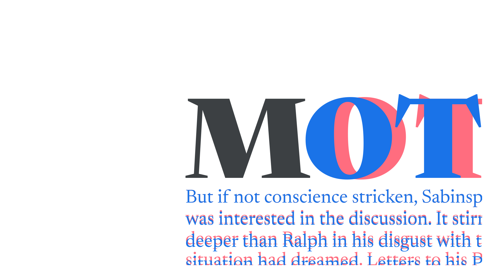

Typography
By Google Fonts Knowledge contributors · Google Fonts Knowledge.
Original article · Source on GitHub · CC BY-SA 4.0. Text, illustrations and existing credits reproduced from the licensed Knowledge repository. Open Shelf adapted the layout and links; these adaptations are also CC BY-SA 4.0. No endorsement implied.
Typography is the practice of making informed decisions about the setting of type. Not to be confused with type design.

Choosing typefaces isn’t actually a part of typography, although it’s an act usually discussed at the same time. Changes to font weights, line height, measure (line length), and so much more constitute the art and science of typography.
Good typography first ensures the message is communicated, then influences how the message is communicated.